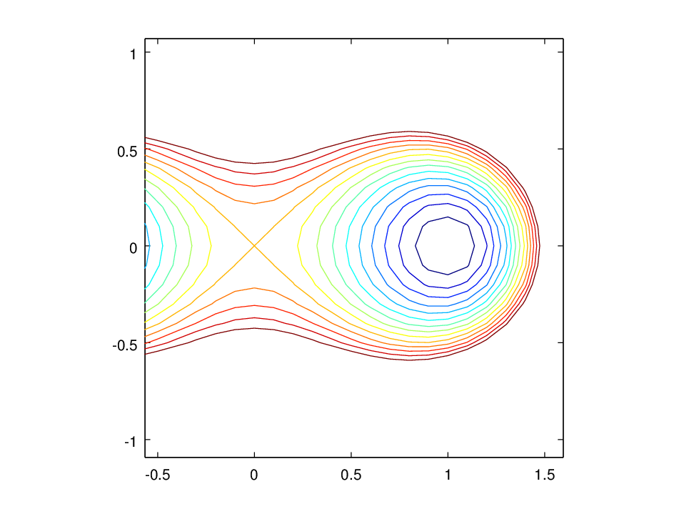

2. Hlutafleiður¶
“If you need help bark like a dog.“ - Gendry. „That’s stupid. If I need help I’ll shout help.“ - Arya”
- George R.R. Martin, A Clash of Kings
2.1. Graf falls¶
2.1.1. Skilgreining¶
Látum \(f:{\mathbb R}^2\rightarrow {\mathbb R}\) vera fall. Graf fallsins er skilgreint sem mengið
Ef \(f:{\mathbb R}^3\rightarrow {\mathbb R}\) er fall, þá er graf fallsins skilgreint sem mengið

Graf fallsins \(f(x,y) = \sqrt{1-x^2-y^2}\), \(-0.5\leq x,y\leq 0.5\).
2.2. Jafnhæðarlínur¶
2.2.1. Skilgreining¶
Látum \(f:{\mathbb R}^2\rightarrow {\mathbb R}\) vera fall. Ef \(c\) er fasti þá er mengið
kallað jafnhæðarlínaen: contour line
Smelltu fyrir ítarlegri þýðingu.
Smelltu fyrir ítarlegri þýðingu.
Látum \(f:{\mathbb R}^3\rightarrow {\mathbb R}\) vera fall. Ef \(c\) er fasti þá er mengið
kallað jafnhæðarflöturen: contour surface
Smelltu fyrir ítarlegri þýðingu.
{kind=link}
Nokkrar jafnæðarlínur fallsins \(f(x,y) = \sqrt{1-x^2-y^2}\), \(-0.5\leq x,y\leq 0.5\).
2.3. Fjarlægð milli punkta¶
2.3.1. Skilgreining¶
Fjarlægðin milli tveggja punkta \(\mbox{${\bf x}$}=(x_1,x_2, \ldots,x_n)\) og \(\mbox{${\bf y}$}=(y_1,y_2, \ldots,y_n)\) í \(\mbox{${\bf R}^n$}\) er skilgreind sem talan
2.4. Opnar kúlur¶
2.4.1. Skilgreining¶
Látum \(P=(p_1,p_2,\ldots,p_n)\) vera punkt í \(\mbox{${\bf R}^n$}\). Skilgreinum opnu kúluna með miðju í \(P\) og geisla \(r\) sem mengið
Í \({\mathbb R}^2\) er eðlilegra að tala um opna skífu eða opinn disk í stað opinnar kúlu og í \({\mathbb R}\) þá er talað um opin bil.
2.5. Opin mengi¶
2.5.1. Skilgreining¶
Látum \(U\) vera hlutmengi í \(\mbox{${\bf R}^n$}\).
Sagt er að \(U\) sé opið mengien: open set
Smelltu fyrir ítarlegri þýðingu.
Mengið \(U\) er sagt lokaðen: closed set
Smelltu fyrir ítarlegri þýðingu.
Smelltu fyrir ítarlegri þýðingu.
2.6. Jaðarpunktur¶
2.6.1. Skilgreining¶
Látum \(U\) vera mengi í \(\mbox{${\bf R}^n$}\). Punktur
\(P\) í \(\mbox{${\bf R}^n$}\) er sagður jaðarpunkturen: boundary point
Smelltu fyrir ítarlegri þýðingu.
2.7. Skilgreiningarmengi¶
2.7.1. Skilgreining¶
Fyrir fall \(f(x_1,x_2,\ldots,x_n)\) þá táknar \({\cal D}(f)\)
skilgreiningarmengien: argument domain
Smelltu fyrir ítarlegri þýðingu.
2.8. Markgildi¶
2.8.1. Skilgreining¶
Látum \(f(x_1,x_2,\ldots,x_n)\) vera fall af \(n\) breytistærðum með skilgreiningarmengi \({\cal D}(f)\subseteq \mbox{${\bf R}^n$}\). Látum \(P=(p_1,p_2,\ldots,p_n)\) vera punkt í \(\mbox{${\bf R}^n$}\) þannig að sérhver opin kúla um \(P\) inniheldur meira en einn punkt úr \({\cal D}(f)\).
Segjum að \(f(x_1,x_2,\ldots,x_n)\) stefni áen: converge to
Smelltu fyrir ítarlegri þýðingu.
Fyrir sérhverja tölu \(\epsilon>0\) er til tala \(\delta>0\) þannig að ef \((x_1,x_2,\ldots,x_n)\in{\cal D}(f)\) og
þá er
2.8.2. Ritháttur¶
Ef \(f(x_1,x_2,\ldots,x_n)\) stefnir á tölu \(L\) þegar \((x_1,x_2,\ldots,x_n)\) stefnir á \((p_1,p_2,\ldots,p_n)\) þá er ritað
og \(L\) kallast markgildi
Ef við skrifum \(\mathbf x = (x_1,x_2,\ldots,x_n)\) og \(\mathbf p = (p_1,p_2,\ldots,p_n)\) þá getum við skrifað þetta svona
2.8.3. Skilgreining (Skilgreining 2.8.1 sett fram fyrir föll af tveimur breytum.)¶
Látum \(f(x,y)\) vera fall skilgreint á mengi \({\cal D}(f)\subseteq {\mathbb R}^2\). Látum \((a,b)\) vera punkt í \({\mathbb R}^2\) þannig að sérhver opin skífa um \((a,b)\) inniheldur meira en einn punkt úr \({\cal D}(f)\).
Segjum að \(f(x,y)\) stefni á tölu \(L\) þegar \((x,y)\) stefnir á \((a,b)\) ef eftirfarandi gildir:
Fyrir sérhverja tölu \(\epsilon>0\) er til tala \(\delta>0\) þannig að ef \((x,y)\in{\cal D}(f)\) og
þá er
2.9. Reglur um markgildi¶
2.9.1. Setning¶
Látum \(f\) og \(g\) vera föll af tveimur breytum. Gerum ráð fyrir að
og að sérhver grennden: neighbourhood
Smelltu fyrir ítarlegri þýðingu.
(a) \(\lim_{(x,y)\rightarrow (a,b)}(f(x,y)\pm g(x,y))=L\pm M\).
(b) \(\lim_{(x,y)\rightarrow (a,b)}f(x,y) g(x,y)=LM\).
(c) \(\lim_{(x,y)\rightarrow (a,b)}\frac{f(x,y)}{g(x,y)}= \frac{L}{M}\), svo framarlega sem \(M\neq 0\).
(d) \(\lim_{(x,y)\rightarrow (a,b)}F(f(x,y))=F(L)\) ef \(F\) er fall af einni breytistærð sem er samfellt í punktinum \(L\).
2.10. Samfelldni¶
2.10.1. Skilgreining¶
Látum \(f\) vera fall af \(n\) breytistærðum skilgreint á mengi \({\cal D}(f)\) í \(\mbox{${\bf R}^n$}\). Fallið \(f\) er sagt samfellt í punkti \((p_1,p_2,\ldots,p_n)\) í \({\cal D}(f)\) ef
Sagt er að fallið sé samfellten: continuous
Smelltu fyrir ítarlegri þýðingu.
2.11. Hlutafleiður¶
2.11.1. Skilgreining¶
Látum \(f(x,y)\) vera fall af tveimur breytum \(x\) og \(y\) sem er skilgreint á opinni skífu með miðju í punktinum \((a,b)\).
Skilgreinum hlutafleiðu
og hlutafleiðu
ef markgildin eru til.

Hlutafleiða m.t.t. \(x\) fyrir \(y=1\).

Hlutafleiða m.t.t. \(y\) fyrir \(x=1\).
2.11.2. Skilgreining¶
Látum \(f(x,y,z)\) vera fall af þremur breytum \(x\), \(y\) og \(z\) sem er skilgreint á opinni kúlu með miðju í punktinum \((a, b,c)\).
Skilgreinum hlutafleiðu m.t.t. \(x\) í \((a,b,c)\) með
hlutafleiðu m.t.t. \(y\) í \((a,b,c)\) með
og hlutafleiðu m.t.t. \(z\) í \((a,b,c)\) með
ef markgildin eru til.
2.11.3. Skilgreining¶
Látum \(f\) vera fall af \(n\) breytum \(x_1,x_2,\ldots,x_n\) sem er skilgreint á opinni kúlu um punktinn \(\mathbf{a}=(a_1, a_2, \ldots, a_n).\)
Hlutafleiða \(f\) með tilliti til breytunnar \(x_k\) í punktinum \(\mathbf{a}\) er skilgreind sem markgildið
ef markgildið er til. (Hér stendur \(\mbox{${\bf e}$}_k\) fyrir vigurinn sem er með 0 í öllum hnitum nema því \(k\)-ta þar sem er 1.)
2.11.4. Ritháttur¶
Ritum \(z=f(x,y)\). Ýmis konar ritháttur er fyrir hlutafleiður, m.a.
Þegar við viljum tákna gildið á hlutafleiðu \(f\) í ákveðnum punkti \((x,y)=(a,b)\) þá eru líka ýmsir möguleikar, til dæmis
Aðvörun
Strangt til tekið merkir rithátturinn \(\frac{\partial}{\partial x} f(a,b)\) að við stingum fyrst inn tölunum \(a\) og \(b\) og diffrum síðan með tilliti til \(x\). En þar sem \(f(a,b)\) er óháð \(x\) er útkoman 0.
2.12. Snertiplan¶
Látum \(f(x,y)\) vera fall af tveimur breytistærðum þannig að hlutafleiðurnar \(f_1(a,b)\) og \(f_2(a,b)\) séu skilgreindar.

Í punktinum \((a,b,f(a,b))\) er
\(\mbox{${\bf T}$}_1 = \mbox{${\bf i}$}+ f_1(a,b)\mbox{${\bf k}$}\qquad\)
snertiviguren: tangent vector
Smelltu fyrir ítarlegri þýðingu.
\(\mbox{${\bf T}$}_2 = \mbox{${\bf j}$}+ f_2(a,b)\mbox{${\bf k}$}\qquad\)
snertiviguren: tangent vector
Smelltu fyrir ítarlegri þýðingu.
Táknum með \(S\) planið sem hefur stikunina
Vigurinn
er þvervigur á \(S\) og jafna plansins \(S\) er
Þverlínaen: normal
Smelltu fyrir ítarlegri þýðingu.
Ef \(f(x,y)\) er ’nógu nálægt’ (skilgreint nánar síðar) planinu
\(S\) þegar \((x,y)\) er nálægt punktinum \((a,b)\) þá
kallast \(S\) snertiplanen: tangent plane
Smelltu fyrir ítarlegri þýðingu.
2.13. Hlutafleiður af hærra stigi¶
2.13.1. Skilgreining¶
Ritum \(z=f(x,y)\). Annars stigs hlutafleiður \(f\) eru skilgreindar með formúlunum
Hlutafleiðurnar \(f_{11}(x,y)\) og \(f_{22}(x,y)\) kallast hreinar hlutafleiður og \(f_{12}(x,y)\) og \(f_{21}(x,y)\) kallast blandaðar hlutafleiður.
2.13.2. Setning¶
Látum \(f(x,y)\) vera fall sem er skilgreint á opinni skífu \(D\) með miðju í \(P=(a,b)\) . Gerum ráð fyrir að hlutafleiðurnar \(f_1(x,y)\), \(f_2(x,y)\), \(f_{12}(x,y)\) og \(f_{21}(x,y)\) séu allar skilgreindar á \(D\) og að þær séu allar samfelldar á \(D\). Þá gildir að
2.13.3. Hugmynd að skilgreiningu¶
Skilgreiningu 5.6 má útvíkka á augljósan hátt til að skilgreina 2. stigs hlutafleiður fyrir föll af fleiri en tveimur breytum. Einnig er augljóst hvernig má skilgreina hlutafleiður af hærri stigum en 2, til dæmis ef \(w=f(x,y,z)\) þá
og
2.13.4. Setning (Almenn útgáfa af Setningu 2.13.2)¶
Látum \(f\) vera fall \(n\) breytistærðum sem er skilgreint á opinni kúlu með miðju í \(P=(x_1, x_2,\ldots, x_n)\).
Skoðum tvær hlutafleiður \(f\) í punktum \(P\) þar sem er diffrað með tilliti til sömu breytistærða og jafn oft með tilliti til hverrar breytistærðar. Ef þessar hlutafleiður eru samfelldar í punktinum \(P\) og allar hlutafleiður af lægra stigi eru skilgreindar á \(D\) og samfelldar á \(D\) þá eru hlutafleiðurnar sem við erum að skoða jafnar í \(P\).
2.13.5. Dæmi:¶
Ef \(w = f(x,y,z)\) er fall af þremur breytistærðum þá er t.d.
ef skilyrðin í setningunni eru uppfyllt.
2.14. Keðjuregla¶
2.14.1. Setning (Keðjureglan í einni breytistærð.)¶
Við munum nú skoða nokkrar útgáfur af keðjuregluen: chain rule
Smelltu fyrir ítarlegri þýðingu.
2.14.2. Setning¶
Látum \(f(x,y)\) vera fall þar sem \(x=x(t)\) og \(y=y(t)\) eru föll af breytu \(t\). Gerum ráð fyrir að á opinni skífu um punktinum \((x(t),y(t))\) séu báðar fyrsta stigs hlutafleiður \(f\) skilgreindar og samfelldar. Gerum enn fremur ráð fyrir að föllin \(x(t)\) og \(y(t)\) séu bæði diffranleg í punktinum \(t\). Þá er fallið
diffranlegt í \(t\) og
2.14.3. Ritháttur¶
Ritum \(z=f(x,y)\) þar sem \(x=x(t)\) og \(y=y(t)\) eru föll af breytu \(t\). Þá er

2.14.4. Setning¶
Látum \(f(x,y)\) vera fall af breytistærðum \(x\) og \(y\) sem aftur eru föll af breytum \(s\) og \(t\), það er að segja \(x=x(s,t)\) og \(y=y(s,t)\). Ritum svo
Þá gildir (að gefnum sambærilegum skilyrðum og í 2.14.2) að
2.14.5. Ritháttur¶
Ritum \(z=f(x,y)\) þar sem \(x=x(s,t)\) og \(y=y(s,t)\) eru föll af breytum \(s\) og \(t\). Þá er

2.14.6. Ritháttur¶
Ritum \(z=f(x,y)\) þar sem \(x=x(s,t)\) og \(y=y(s,t)\) eru föll af breytum \(s\) og \(t\). Þá er
2.14.7. Setning¶
Látum \(u\) vera fall af \(n\) breytum \(x_1, x_2, \ldots, x_n\) þannig að hvert \(x_i\) má rita sem fall af \(m\) breytum \(t_1, t_2, \ldots, t_m\). Gerum ráð fyrir að allar hlutafleiðurnar \(\frac{\partial u}{\partial x_i}\) og \(\frac{\partial x_i}{\partial t_j}\) séu til og samfelldar. Þegar \(u\) er skoðað sem fall af breytunum \(t_1, t_2, \ldots, t_m\) fæst að

2.14.8. Dæmi¶
Látum \(T\) vera fall af fall af \(x\), \(y\) og \(t\), og \(x\) og \(y\) föll af \(t\). Finnum \(\frac{ dT}{dt}\).

2.14.9. Dæmi¶
Látum \(T\) vera fall af fall af \(x\), \(y\), \(s\) og \(t\), og \(x\) og \(y\) föll af \(s\) og \(t\). Finnum \(\frac{ \partial T}{\partial t}\).

2.14.10. Dæmi¶
Látum \(z\) vera fall af fall af \(u\), \(v\) og \(r\), \(u\) og \(v\) vera föll af \(x\), \(y\) og \(r\) og \(r\) vera fall af \(x\) og \(y\). Skrifum niður \(\frac{\partial z}{\partial x}\).

2.15. Diffranleiki í einni breytistærð¶
2.15.1. Skilgreining¶
Látum \(f\) vera fall af einni breytistærð og gerum ráð fyrir að
\(f\) sé skilgreint á opnu bili sem inniheldur punktinn \(a\).
Fallið \(f\) er sagt vera diffranlegten: differentiable
Smelltu fyrir ítarlegri þýðingu.
er til.
2.16. Diffranleiki í einni breytistærð - önnur lýsing¶
2.16.1. Skilgreining¶
Látum \(f\) vera fall af einni breytistærð og gerum ráð fyrir að
\(f\) sé skilgreint á opnu bili sem inniheldur punktinn \(a\).
Fallið \(f\) er sagt vera diffranlegten: differentiable
Smelltu fyrir ítarlegri þýðingu.
(Talan \(m\) verður að vera jöfn \(f'(a)\).)
Fallið \(f\) er ’nálægt’ línunni \(L\) nálægt punktinum \(a\).
2.17. Diffranleiki¶
2.17.1. Skilgreining¶
Fall \(f(x,y)\) sem er skilgreint á opinni skífu umhverfis
\((a,b)\) er sagt vera diffranlegten: differentiable
Smelltu fyrir ítarlegri þýðingu.
þar sem \(S(x,y) = f(a,b) + f_1(a,b)(x-a)+f_2(a,b)(y-b)\).
Fallið \(f\) er ’nálægt’ sléttunni \(S\) nálægt punktinum \((a,b)\).
2.18. Snertiplan¶
Ef \(f\) er diffranlegt í \((a,b)\) þá kallast planið \(S\)
snertiplanen: tangent plane
Smelltu fyrir ítarlegri þýðingu.
\(S(x,y) = f(a,b) + f_1(a,b)(x-a)+f_2(a,b)(y-b)\).
2.19. Diffranleiki¶
2.19.1. Setning (Meðalgildissetningin)¶
Gerum ráð fyrir að fallið \(f\) sé samfellt á lokaða bilinu \([a,b]\) og diffranlegt á opna bilinu \((a,b)\). Þá er til punktur \(c\) á opna bilinu \((a,b)\) þannig að
2.19.2. Setning¶
Látum \(f(x,y)\) vera fall sem er skilgreint á opinni skífu \(\cal D\) með miðju í \((a,b)\) þannig að á þessari skífu eru báðar fyrsta stigs hlutafleiður \(f\) skilgreindar og samfelldar. Gerum ráð fyrir að \(h\) og \(k\) séu tölur þannig að \((x+h, y+k)\in{\cal D}\). Þá eru til tölur \(\theta_1\) og \(\theta_2\) á milli 0 og 1 þannig að
2.19.3. Setning¶
Látum \(f(x,y)\) vera fall sem er skilgreint á opinni skífu \(\cal D\) með miðju í \((a,b)\) þannig að á þessari skífu eru báðar fyrsta stigs hlutafleiður \(f\) skilgreindar og samfelldar. Þá er fallið \(f\) diffranlegt í \((a,b)\).
2.19.4. Setning¶
Gerum ráð fyrir að \(f(x,y)\) sé fall sem er diffranlegt í punktinum \((a,b)\). Þá er \(f\) samfellt í \((a,b)\).
2.19.5. Keðjuregla¶
Ritum \(z=f(x,y)\) þar sem \(x=x(s,t)\) og \(y=y(s,t)\). Gerum ráð fyrir að
\(x(a,b)=p\) og \(y(a,b)=q\);
fyrsta stigs hlutafleiður \(x(s,t)\) og \(y(s,t)\) eru skilgreindar í punktinum \((a,b)\);
fallið \(f\) er diffranlegt í punktinum \((p,q)\).
Þá eru fyrsta stigs hlutafleiður \(z\) með tilliti til breytanna \(s\) og \(t\) skilgreindar í punktinum \((a,b)\) og um þær gildir að
og
2.20. Diffur¶
2.20.1. Skilgreining¶
Ritum \(z=f(x_1, x_2, \ldots, x_n)\). Diffriðen: differential
Smelltu fyrir ítarlegri þýðingu.
Diffrið er nálgun á
2.21. Varpanir \(\mbox{${\bf R}^n$}\rightarrow\mbox{${\bf R}^m$}\)¶
2.21.1. Táknmál¶
Látum \(\mbox{${\bf f}$}:\mbox{${\bf R}^n$}\rightarrow\mbox{${\bf R}^m$}\) tákna vörpun. Ritum \(\mbox{${\bf f}$}=(f_1,\ldots,f_m)\) þar sem hvert \(f_i\) er fall \(\mbox{${\bf R}^n$}\rightarrow{\mathbb R}\). Fyrir punkt í \(\mbox{${\bf R}^n$}\) ritum við \(\mbox{${\bf x}$}=(x_1,x_2,\ldots,x_n)\). Síðan ritum við \(\mbox{${\bf y}$}=\mbox{${\bf f}$}(\mbox{${\bf x}$})\) þar sem \(\mbox{${\bf y}$}=(y_1,y_2,\ldots,y_m)\) og \(\mathbf f(\mathbf x) = (f_1(x_1,\ldots,x_n),\ldots,f_m(x_1,\ldots,x_n))\).
2.22. Jacobi-fylki¶
2.22.1. Skilgreining¶
Notum táknmálið úr 2.22.1. Ef allar hlutafleiðurnar \(\partial y_i/\partial x_j\) eru skilgreindar í punktinum \(\mbox{${\bf x}$}\) þá skilgreinum við Jacobi-fylki \(f\) í punktinum \(\mbox{${\bf x}$}\) sem \(m\times n\) fylkið
2.23. Diffranleiki varpana \(\mbox{${\bf R}^n$}\rightarrow\mbox{${\bf R}^m$}\)¶
2.23.1. Skilgreining¶
Notum táknmálið úr 2.22.1 og 2.23.1. Látum \(\mbox{${\bf a}$}=(a_1, a_2, \ldots, a_n)\) vera fastan punkt í \(\mbox{${\bf R}^n$}\) og ritum \(\mbox{${\bf h}$}=(h_1,h_2,\ldots,h_n)\). Vörpunin \(\mbox{${\bf f}$}\) er sögð diffranleg í punktinum \(\mbox{${\bf a}$}\) ef
Vörpunin \(f\) er ’nálægt’ línulegu vörpuninni \(D\mbox{${\bf f}$}\) nálægt punktinum \(\mbox{${\bf a}$}\).
Línulega vörpunin \(D\mbox{${\bf f}$}\) kallast afleiða \(\mbox{${\bf f}$}\).
2.24. Keðjuregla¶
2.24.1. Setning¶
Látum \(\mbox{${\bf f}$}:\mbox{${\bf R}^n$}\rightarrow \mbox{${\bf R}^m$}\) og \(\mbox{${\bf g}$}:\mbox{${\bf R}^m$}\rightarrow \mbox{${\bf R}^k$}\) vera varpanir. Gerum ráð fyrir að vörpunin \(\mbox{${\bf f}$}\) sé diffranleg í punkti \(\mbox{${\bf x}$}\) og vörpunin \(\mbox{${\bf g}$}\) sé diffranleg í punktinum \(\mbox{${\bf y}$}=\mbox{${\bf f}$}(\mbox{${\bf x}$})\). Þá er samskeytta vörpunin \(\mbox{${\bf g}$}\circ\mbox{${\bf f}$}:\mbox{${\bf R}^n$}\rightarrow\mbox{${\bf R}^k$}\) diffranleg í \(\mbox{${\bf x}$}\) og
2.25. Stigull¶
2.25.1. Skilgreining¶
Látum \(f(x,y)\) vera fall og \((x,y)\) punkt þar sem báðar
fyrsta stigs hlutafleiður \(f\) eru skilgreindar. Skilgreinum
stigulen: gradient
Smelltu fyrir ítarlegri þýðingu.
Stigullen: gradient
Smelltu fyrir ítarlegri þýðingu.
2.25.2. Ritháttur¶
Oft hentugt að rita
Þá er litið svo á að \(\nabla\) sé diffurvirkien: differential operator
Smelltu fyrir ítarlegri þýðingu.
2.26. Dæmi¶

Graf \(z=1-x^2-y^2\)

Jafnhæðarlínur \(z=1-x^2-y^2\). Stigull og snertilína við jafnhæðarlínuna \(z=0.5\) í \((x,y) = (0.5,0.5)\).
2.26.1. Setning¶
Gerum ráð fyrir að fallið \(f(x,y)\) sé diffranlegt í punktinum \((a,b)\) og að \(\nabla f(a,b) \neq \mathbf{0}\). Þá er vigurinn \(\nabla f(a,b)\) hornréttur á þá jafnhæðarlínu \(f\) sem liggur í gegnum punktinn \((a,b)\).
2.27. Snertilína við jafnhæðarferil¶
2.27.1. Setning¶
Gerum ráð fyrir að fallið \(f(x,y)\) sé diffranlegt í punktinum
\((a,b)\) og að \(\nabla f(a,b) \neq \mathbf{0}\). Jafna
snertilínuen: tangent
Smelltu fyrir ítarlegri þýðingu.
Smelltu fyrir ítarlegri þýðingu.
eða
2.28. Stefnuafleiða¶
2.28.1. Skilgreining¶
Látum \(\mbox{${\bf u}$}=u\mbox{${\bf i}$}+v\mbox{${\bf j}$}\) vera
einingarvigur. Stefnuafleiða
ef markgildið er skilgreint.
Aðvörun
Í skilgreiningunni á stefnuafleiðu er tekið einhliða markgildi. Berið það saman við skilgreiningu á hlutafleiðu þar sem markgildið er tvíhliða.
2.28.2. Setning¶
Gerum ráð fyrir að fallið \(f\) sé diffranlegt í \((a,b)\) og \(\mbox{${\bf u}$}=u\mbox{${\bf i}$}+v\mbox{${\bf j}$}\) sé einingarvigur. Þá er stefnuafleiðan í punktinum \((a,b)\) í stefnu \(\mbox{${\bf u}$}\) skilgreind og gefin með formúlunni
2.28.3. Setning¶
Látum \(f\) vera gefið fall og gerum ráð fyrir að \(f\) sé diffranlegt í punktinum \((a,b)\).
(a) Hæsta gildið á stefnuafleiðunni \(D_{\mbox{${\bf u}$}}f(a,b)\) fæst þegar \(\mbox{${\bf u}$}\) er einingarvigur í stefnu \(\nabla f(a,b)\), þ.e.a.s. \(\mbox{${\bf u}$}=\frac{\nabla f(a,b)}{|\nabla f(a,b)|}\).
(b) Lægsta gildið á stefnuafleiðunni \(D_{\mbox{${\bf u}$}}f(a,b)\) fæst þegar \(\mbox{${\bf u}$}\) er einingarvigur í stefnu \(-\nabla f(a,b)\), þ.e.a.s. \(\mbox{${\bf u}$}=-\frac{\nabla f(a,b)}{|\nabla f(a,b)|}\).
(c) Ef \(\cal C\) er sú hæðarlína \(f\) sem liggur í gegnum \((a,b)\) og \(\mbox{${\bf u}$}\) er einingarsnertivigur við \(\cal C\) í punktinum \((a,b)\) þá er \(D_{\mbox{${\bf u}$}}f(a,b)=0\).
{kind=link}
2.28.4. Setning¶
Látum \(f\) vera gefið fall og gerum ráð fyrir að \(f\) sé diffranlegt í punktinum \((a,b)\).
(a) Í punktinum \((a,b)\) þá vex \(f\) hraðast ef haldið er í stefnu \(\nabla f(a,b)\).
(b) Í punktinum \((a,b)\) þá minnkar \(f\) hraðast ef haldið er í stefnu \(-\nabla f(a,b)\).
(c) Ef \(\cal C\) er sú hæðarlína \(f\) sem liggur í gegnum \((a,b)\) og \(\mbox{${\bf u}$}\) er einingarsnertivigur við \(\cal C\) í punktinum \((a,b)\) þá er er vaxtarhraði \(f\) í stefnu \(\mbox{${\bf u}$}\) jafn 0.
2.29. Stigull (aftur)¶
2.29.1. Skilgreining¶
Látum \(f\) vera fall af þremur breytistærðum, þannig að allar þrjár
fyrsta stigs hlutafleiður \(f\) í punktinum \((x,y,z)\) séu
skilgreindar. Stigullen: gradient
Smelltu fyrir ítarlegri þýðingu.
2.30. Snertiplan við jafnhæðarflöt¶
2.30.1. Setning¶
Látum \(f\) vera fall af þremur breytistærðum þannig að fallið
\(f\) er diffranlegt í punktinum \((a,b,c)\). Látum
\(\cal F\) tákna þann jafnhæðarflöten: contour surface
Smelltu fyrir ítarlegri þýðingu.
Smelltu fyrir ítarlegri þýðingu.
eða með umritun
2.31. Fólgin föll og Taylor-nálganir¶
2.31.1. Upprifjun¶
Skoðum feril sem gefinn er með jöfnu \(F(x,y)=0\) og gerum ráð fyrir að báðar fyrsta stigs hlutafleiður \(F\) séu samfelldar. Látum \((x_0,y_0)\) vera punkt á ferlinum. Ef \(F_2(x_0,y_0)\neq 0\) þá má skoða \(y\) sem fall af \(x\) í grennd við punktinn \((x_0,y_0)\) og fallið \(y=y(x)\) er diffranlegt í punktinum \(x_0\) og afleiðan er gefin með formúlunni
Sagt að jafnan \(F(x,y)=0\) skilgreini \(y\) sem fólgið fallen: implicit function
Smelltu fyrir ítarlegri þýðingu.
2.31.2. Setning¶
Látum \(F\) vera fall af \(n\)-breytum \(x_1, \ldots, x_n\) og gerum ráð fyrir að allar fyrsta stigs hlutafleiður \(F\) séu samfelldar. Látum \((a_1,\ldots,a_n)\) vera punkt þannig að \(F(a_1,\ldots,a_n)=0\). Ef \(F_n(a_1,\ldots,a_n)\neq 0\) þá er til samfellt diffranlegt fall \(\varphi(x_1, \ldots, x_{n-1})\) skilgreint á opinni kúlu \(B\) utan um \((a_1,\ldots,a_{n-1})\) þannig að
og
fyrir alla punkta \((x_1, \ldots, x_{n-1})\) í \(B\).
Ennfremur gildir að
2.31.3. Skilgreining¶
Jacobi-ákveða
Ef \(F\) og \(G\) eru föll af breytum \(x,y,z,\ldots\) þá skilgreinum við, til dæmis,
Ef við höfum föll \(F, G, H\) af breytum \(x,y,z,w,\ldots\) þá skilgreinum við, til dæmis,
2.31.4. Setning (Upprifjun á reglu Cramers.)¶
Látum \(A\) vera andhverfanlegt \(n\times n\) fylki og \(\mbox{${\bf b}$}\) vigur í \(\mbox{${\bf R}^n$}\). Gerum ráð fyrir að \(\mbox{${\bf x}$}=(x_1, x_2, \ldots, x_n)\) sé lausn á \(A\mbox{${\bf x}$}=\mbox{${\bf b}$}\). Skilgreinum \(B_i\) sem \(n\times n\) fylkið sem fæst með því að setja vigurinn \(\mbox{${\bf b}$}\) í staðinn fyrir dálk \(i\) í \(A\). Þá er
2.31.5. Setning (Setningin um fólgin föllen: implicit function theorem
Smelltu fyrir ítarlegri þýðingu.
Smelltu fyrir ítarlegri þýðingu.
Skoðum jöfnuhneppi
Látum \(P_0=(a_1,\ldots, a_m, b_1,\ldots, b_n)\) vera punkt sem uppfyllir jöfnurnar. Gerum ráð fyrir að allar fyrsta stigs hlutafleiður fallanna \(F_{(1)},\ldots, F_{(n)}\) séu samfelldar á opinni kúlu umhverfis \(P_0\) og að
fyrir alla punkta \((x_1,\ldots,x_m)\) í \(B\). Enn fremur fæst að
2.31.6. Setning (Setningin um staðbundna andhverfu)¶
vera vörpun af \(n\) breytistærðum sem tekur gildi í \(\mbox{${\bf R}^n$}\) og er skilgreind á opnu mengi í \(\mbox{${\bf R}^n$}\). Gerum ráð fyrir að allar fyrsta stigs hlutafleiður fallanna \(f_1, \ldots, f_n\) séu samfelld föll. Ef Jacobi-fylkið \(D\mbox{${\bf f}$}(\mbox{${\bf x}$}_0)\) er andhverfanlegt í punkti \(\mbox{${\bf x}$}_0\) á skilgreiningarsvæði \(\mbox{${\bf f}$}\) þá er til opin kúla \(B_{\mbox{${\bf x}$}}\) utan um \(\mbox{${\bf x}$}_0\) og opin kúla \(B_{\mbox{${\bf y}$}}\) utan um \(\mbox{${\bf y}$}_0=f(\mbox{${\bf x}$}_0)\) og vörpun | \(\mbox{${\bf g}$}:B_{\mbox{${\bf y}$}}\rightarrow B_{\mbox{${\bf x}$}}\) þannig að \(\mbox{${\bf g}$}(\mbox{${\bf f}$}(\mbox{${\bf x}$}))=\mbox{${\bf x}$}\) fyrir alla punkta \(\mbox{${\bf x}$}\in B_{\mbox{${\bf x}$}}\) og \(\mbox{${\bf f}$}(\mbox{${\bf g}$}(\mbox{${\bf y}$}))=\mbox{${\bf y}$}\) fyrir alla punkta \(\mbox{${\bf y}$}\in B_{\mbox{${\bf y}$}}\).
2.31.7. Upprifjun (Taylor-regla í einni breytistærð.)¶
Látum \(f\) vera \(n+1\)-diffranlegt fall af einni breytistærð. Margliðan
kallast \(n\)-ta stigs Taylor-margliða \(f\) með miðju í \(a\). Til er punktur \(s\) á milli \(a\) og \(x\) þannig að
Fáum svo að
sem er kallað \(n\)-ta stigs Taylor-formúla.
2.31.8. Skilgreining¶
Látum \(f(x,y)\) vera fall þannig að fyrsta stigs hlutafleiður \(f\) eru skilgreindar og samfelldar. Margliðan
kallast fyrsta stigs Taylor-margliða \(f\) með miðju í \((a,b)\).
2.31.9. Skilgreining¶
Látum \(f(x,y)\) vera fall þannig að fyrsta og annars stigs hlutafleiður \(f\) eru skilgreindar og samfelldar. Margliðan
kallast annars stigs Taylor-margliða \(f\) með miðju í \((a,b)\).
2.31.10. Skilgreining og athugasemd¶
Skilgreinum tvo diffurvirkjaen: differential operator
Smelltu fyrir ítarlegri þýðingu.
Athugið að ef hlutafleiður \(f\) af nógu háum stigum eru allar skilgreindar og samfelldar þá er \(D_1D_2=D_2D_1\), þ.e.a.s. ekki skiptir máli í hvaða röð er diffrað, bara hve oft er diffrað með tilliti til hvorrar breytu.
2.31.11. Upprifjun (Tvíliðureglaen: binomial theorem
Smelltu fyrir ítarlegri þýðingu.
Smelltu fyrir ítarlegri þýðingu.
Skilgreinum
Talan \({n\choose j}\) (lesið \(n\) yfir \(j\)) er \(j+1\) talan í \(n+1\) línu Pascals-þríhyrningsins. Höfum að
2.31.12. Regla¶
Ef \(f(x,y)\) er fall þannig að allar hlutafleiður af \(n\)-ta og lægri stigum eru samfelldar þá gildir að
2.31.13. Skilgreining¶
Fyrir fall \(f(x,y)\) þannig að allar hlutafleiður af \(n\)-ta og lægri stigum eru samfelldar þá er \(n\)-ta stigs Taylor-margliða \(f\) með miðju í punktinum \((a,b)\) skilgreind sem margliðan
2.31.14. Setning¶
Fyrir fall \(f(x,y)\) þannig að allar hlutafleiður af \(n+1\)-ta og lægri stigum eru samfelldar þá gildir um skekkjuna í \(n\)-ta stigs Taylor-nálgun að til er tala \(\theta\) á milli 0 og 1 þannig að ef \(h=x-a\) og \(k=y-b\) þá er